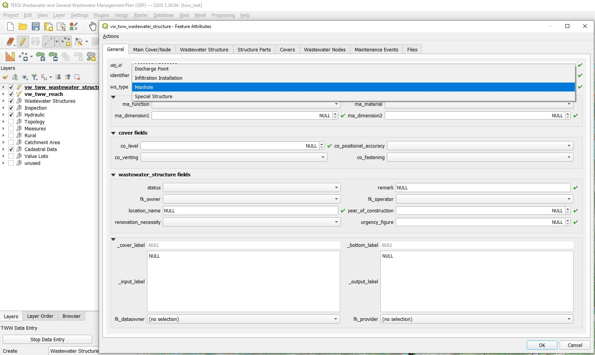
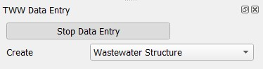

Numériser les structures assainissement
Généralités
TWW dispose d’un assistant permettant de saisir correctement les regards et les structures spéciales. Voir le chapitre L’assistant TWW.
Sélectionnez le bouton Assistant puis cliquez sur le bouton Commencer la saisie de données et choisir Ouvrage assainissement dans le menu déroulant.

Numérisation
Le curseur passe alors en mode numérisation et il est possible de sélectionner l’emplacement du nouvel élément.
Le formulaire vw_tww_structure_assainissement s’ouvre ensuite et vous pouvez commencer la saisie de données dans l’onglet Général:

Sélectionnez le ws_type désiré (“regard” est sélectionné par défaut):
Regard
structure_speciale
point_deversement
installation_infiltration
Note
Les autres sous‑types de wastewater_structure ( wwtp_structure, small_treatment_plant, drainless_toilet ) ne font pas partie du modèle de données SIA 405 et ne sont donc pas inclus dans vw_tww_wastewater_structure. Dans la version 2025 de TWW, une autre couche, vw_tww_additional_ws, existe pour ces sous‑classes.
Selon le ws_type, vous aurez différents champs et onglets dans le formulaire.
Ajoutez ensuite l’identifiant (il s’agit de l’attribut qui sera affiché sur la carte)
Note
Si vous n’entrez pas d’identifiant, TWW entrera l’obj_id en tant qu’identifiant (vous pouvez le modifier plus tard). Par défaut, l’identifiant de la structure assainissement est également l’identifiant du couvercle et du noeud assainissement.
Ajoutez d’autres attribus dans l’onglet Général. Vous pouvez également ajouter des attributs dans les autres onglets (Couvercle, Structure assainissement, Regard, Noeud assainissement).
Note
Le concept de l’onglet Général est que, dans le processus normal de numérisation (95% des regards), l’opérateur n’a pas besoin de changer d’onglet pour renseigner les attributs nécessaires.
Attention
You can not use Actions for digitize a detail geometry during creating a new manhole, because you have to save first the Wastewater Structure-record to the database before you can add a detail geometry. First safe the record.
Vous pouvez ajouter des enregistrements supplémentaires dans Structure Parts ou un deuxième nœud d’eaux usées dans les onglets Wastewater Nodes ou Maintenance Events. Toutefois, dans l’onglet Wastewater Nodes, le nœud principal créé avec la nouvelle structure des eaux usées n’est pas visible. Ce nœud principal est visible dans l’onglet Main Cover/Node. Après l’enregistrement de la nouvelle structure des eaux usées, vous trouverez deux nœuds dans l’onglet Wastewater Nodes.
Cliquez OK pour fermer le formulaire

Sauvez les informations de la couche en stoppant l’assistant de saisie.

Vous pouvez rééditer votre objet ponctuel en activant le mode édition, puis en cliquant avec l’outil d’information sur l’objet que vous souhaitez modifier. Si le mode édition n’est pas activé, vous pouvez uniquement consulter les données existantes.
Pour plus d’informations au sujet de l’édition de données, voir le chapitre Modification de données existantes.
Autres classes et attributs
Lorsqu’un objet de type wastewater_structure est numérisé, une série d’étapes se déroulent en arrière‑plan dans la base de données TWW :
Un nouvel objet est ajouté dans la classe ouvrage_assainissement
Un nouvel objet sera crée et lié dans les sous-classes respectives [point_deversement, installation_infiltration, regard, ouvrage_spécial]
Un nouvel objet de type cover est ajouté et lié à la structure des eaux usées si au moins un attribut de couverture, autre que co_obj_id et co_identifier, est renseigné.
Un nouvel objet de type nœud d’eaux usées est généré (dans les éléments du réseau d’eaux usées et sa sous‑classe wastewater nodes) et est lié à la structure des eaux usées.
Le nouveau couvercle et le nouveau nœud sont désignés comme le couvercle principal et le nœud principal de wastewater structure.
Note
Le nœud principal est l’emplacement où le symbole de wastewater structure est affiché dans TWW.
Note
Pour ajouter un (deuxième) couvercle ou un deuxième nœud d’eaux usées à wastewater structure, voir le chapitre Modification de données existantes.
Synchronisation de la géométrie
La géométrie de l’entité ajoutée définit la géométrie des tables qui y sont liées, telles que cover et wastewater node. Le point vw_tww_wastewater_structure lui‑même ne possède pas de valeur Z. Lorsque le niveau du couvercle co_level est renseigné, cette valeur est reportée sur la valeur Z de la géométrie du couvercle. Le niveau du fond du nœud d’eaux usées wn_bottom_level définit la valeur Z de la géométrie du wastewater node.
Note
If a cover level changes, the Z value of the cover’s geometry will be adjusted. When the geometry changes, the co_level attribut is adjusted as well. If both values change, the level takes precedence. On an insert it’s like when both value change. Means the cover’s geometry is set according to the cover level and if it’s NULL, the Z value is set to NaN. The same situation is on editing the wastewater node directly.
Numérisation de wastewater structures supplémentaires
Ajouté dans la version 2025.0.
vw_tww_additional_ws est une vue destinée au travail avec les sous‑classes wwtp_structure, small_treatment_plant et drainless_toilet. Ces sous‑classes ne font pas partie du modèle de données SIA 405.
Ces sous‑classes ne sont pas numérisées à l’aide de l’assistant TWW, mais avec l’outil QGIS Ajouter une entité ponctuelle. De manière similaire à la numérisation des regards ou des structures spéciales, lors de la création d’un nouvel enregistrement, un cover et un wastewater node sont également créés. L’identifiant du wastewater structure est recopié dans cover.identifier et node.identifier. Contrairement à la numérisation dans vw_tww_wastewater_structure, il n’existe pas de main node ni de main cover. La vue vw_tww_additional_ws n’est pas configurée pour l’ajout d’un deuxième couvercle ou d’un deuxième nœud. À l’aide de l’outil TWW connect wastewater networkelements, il est toutefois possible de raccorder des reaches également à ces wastewater structures supplémentaires.